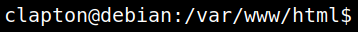
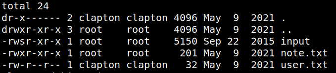
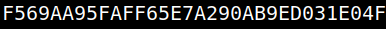

4.4 Switch user (First flag)
1. Switch user ( User's credentialds
clapton:yaraklitepe).www-data@debian:/var/www/html$su clapton
Output:

2. Go to clapton's directory and list the files.
clapton@debian:/home$cd /home/clapton
clapton@debian:~$ls -al
clapton@debian:~$ls -al
Output:

3. Show the flag.
clapton@debian:~$cat user.txt
Output:
